TOMOYO LinuxはLinux向けの強制アクセス制御（MAC）の実装で、システムのセキュリティを高める用途は勿論、システムの解析を行う用途でも使えるツールです。このプロジェクトは２００３年３月に始まり、株式会社ＮＴＴデータがスポンサーとなって開発されています。
TOMOYO Linuxはシステムの振る舞いに注目します。プロセスは何かの目的を達成するために生成されます。TOMOYO Linuxは（出入国審査官のように）それぞれのプロセスに対して目的を達成するのに必要な振る舞いや資源について報告させることができます。また、保護モードを有効にすることにより、（運用監視人のように）システム管理者により承認された振る舞いと資源へのアクセスのみを許可することもできます。
TOMOYO Linuxには以下のような特徴があります。
もっと詳しい情報については詳細を参照してください。１０分でTOMOYO Linuxを体験できるチュートリアル動画もあります。
クスノさんが、version 1.8対応のGUIエディタ、Gui Policy Editor for TOMOYO Linux (gpet) 、を開発、公開されています！
Linuxは、Linus Torvalds氏の日本およびその他の国における登録商標または商標です。
TOMOYOは、株式会社NTTデータの登録商標です。
2011.6.24 openSUSEのversion 12.1でTOMOYOを有効にしてもらえそうです
2011.6.20 TOMOYO Linux 1.8.2がリリースされました
2系への提案についてreviewに協力いただける方を募集中です。
2011.4.1 TOMOYO Linux 1.8.1/1.7.3/1.6.9 がリリースされました（エイプリールフールではありません）
2011.2.15 はてなキーワードの更新を再開します
このはてなキーワードについて、編集ができなくなり更新が滞っていましたが、「はてなサポート」さんに問い合わせたところ原因が判明し、再び編集できるようになりました（祝）。時間を見つけてバックログを追加していきます。
とりあえず、Jamie Nguyenさんの多大なご協力により、TOMOYO Linuxのホームページが全面更改されました。是非、新しいホームページをごらんください！
2010.9.3 TOMOYO Linux on MeeGo
MeeGo上でTOMOYO Linuxを動かしました。動画を公開しています。
2010.8.12 LinuxCon 2010でセキュアOSの概要を説明します。
2010.5.19 TOMOYOが、Debian Squeezeに採用されました！
やまねさん、Moritzさんに感謝します。
2010.4.21 Red Hat Enterprise Linux 6 (RHEL6)のベータ版が公開されました
搭載されているカーネルは2.6.32-19でしたが、TOMOYOとSmackはコンパイルオプションから外されており、そのまま利用できるのは、SELinuxのみになっています。
CONFIG_SECURITY_NETWORK=y CONFIG_SECURITY_NETWORK_XFRM=y # CONFIG_SECURITY_PATH is not set CONFIG_SECURITY_FILE_CAPABILITIES=y # CONFIG_SECURITY_ROOTPLUG is not set CONFIG_SECURITY_SELINUX=y CONFIG_SECURITY_SELINUX_BOOTPARAM=y CONFIG_SECURITY_SELINUX_BOOTPARAM_VALUE=1 CONFIG_SECURITY_SELINUX_DISABLE=y CONFIG_SECURITY_SELINUX_DEVELOP=y CONFIG_SECURITY_SELINUX_AVC_STATS=y CONFIG_SECURITY_SELINUX_CHECKREQPROT_VALUE=1 # CONFIG_SECURITY_SELINUX_POLICYDB_VERSION_MAX is not set # CONFIG_SECURITY_SMACK is not set # CONFIG_SECURITY_TOMOYO is not set
2010.4.1 バージョン1.7.2をリリースしました（エイプリールフールではありません）
2009.12.11 YouTubeにTOMOYOのデモンストレーション動画を登録しました
2009.11.27 第21回 コンピュータシステム・シンポジウム (ComSys 2009)で、「TOMOYO Linuxの設計と実装」について発表を行いました。
2009.11.11 TOMOYO Linuxがtwitterでつぶやき始めました！ http://twitter.com/tomoyo_linux
2009.11.11 version 1.7.1がリリースされました
2009.10.30 JLSの発表について、Computerworldさんに記事が掲載されました。
2009.10.26 JLSの発表について、LWN.netに記事が掲載されました。
2009.10.23 Japan Linux Symposiumで下記の発表を行いました。
2009.10.13 第99回YLUGでLinuxCon参加報告を行いました。
2009.9.23 LinuxCon 2009で講演を行いました。
2009.9.12 hbstudy#3でTOMOYO Linuxの講演を行います
2009.8.20 メインライン化記念パーティの懇親会の模様がZDNetに掲載されました
2009.8.1 Ubuntuオフラインミーティング9.08でTOMOYO Linuxの講演を行いました
2009.7.17 ZDNetにTOMOYO Linuxメインライン化記念勉強会の記事が掲載されました
2009.7.11 日本電子専門学校電設部さんによるTOMOYO Linuxメインライン化記念勉強会と懇親会のレポートが公開されました。
日本電子専門学校電設学部さんによるメインライン化記念勉強会＆懇親会のレポートが公開されました。臨場感あふれる素晴らしい内容です。
2009.7.3 メインライン化を記念して、勉強会と懇親会を開催しました
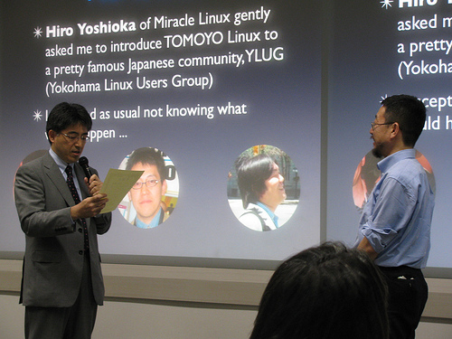
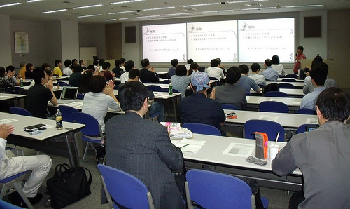
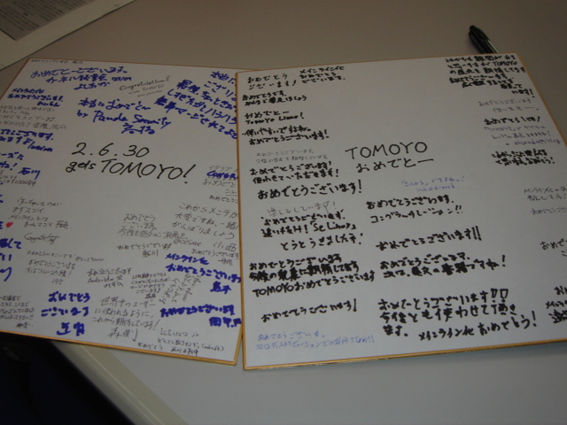
これまでのご支援に感謝して、ささやかながら懇親会を企画いたしました。また、懇親会の前には、YLUGカーネル読書会、セキュアOSユーザ会、まっちゃ445勉強会の協賛による合同勉強会も行いました。
2009.7.2 ThinkITでTOMOYO Linuxの新連載が始まりました。
初めての連携記事で、２回目以降は開発に協力いただいた方たちによる記事が掲載されます。
7/30に5回目が掲載されました。
2009.6.19 メインライン化プレスリリース（英語版）
2009.6.16 ZDNetとbuilderにてTOMOYO Linuxメインライン化の記事（part 2 of 2）が掲載されました
2009.6.16 @ITにてTOMOYO Linuxメインライン化の記事が掲載されました
2009.6.12 ZDNetとbuilderにてTOMOYO Linuxメインライン化の記事（part 1 of 2）が掲載されました
2009.6.12 CE Linux Forum Japan Technical Jamboree 28で話をしました
2009.6.11 メインライン化プレスリリース
2009.6.10 Linux Kernel version 2.6.30にマージされました
みなさん、ありがとうございます、これからもよろしくお願いします。
2009.6.3 @ITの公開勉強会、"Linux Kernel Watch LIVE!"に出演しました
動画
講演者との距離が短く、また撮影アングルが異様ですが、これは「録画を行うために、ビデオカメラのマイクを使って話している」からです。
2009.5.28 セキュアOS塾第3回でライトニングトークを行いました
ライトニングトーク
•その１：Puppetでポリシー配布の紹介（石川）
•その２：TOMOYO Linux を用いたサーバセキュリティ（半田）
•その３：OSC島根リポート（宍道）
講演
SELinuxを使ってみる入門BoF（海外）
（資料は後日セキュアOSユーザ会Wikiで公開の予定です）
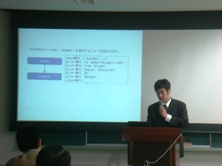
2009.5.28 TOMOYO Linux version 1.6.8をリリースしました
2009.5.22 日経産業新聞にTOMOYO Linuxメインライン化について記事が掲載されました
多くのソフト開発者が起業する米国や、毎年多数のソフト開発者が大学を卒業する中国やインドに比べ、日本では大学でも情報系学科は人気が落ちている。日本のソフト産業の活性化のためにも、今回の意義を広くアピールする必要がありそうだ。
2009.5.22 CE Linux Forum Japan Technical Jamboree 27で話をしました
2009.4.8 TOMOYO Linuxを含むversion 2.6.30 rc1が公開されました
2.6.30のリリースは、2009年6月末の予定です。
2009.4.8 日経Linux 2009.5にTOMOYO Linuxの記事が掲載されました
「SELinuxはもう不要？日本発のセキュリティ機能、カーネルに標準採用へ」と大変刺激的な(=_=;タイトルですが、これはプロジェクトメンバーが考えたものではありませんので、よろしくお願いします。
2009.4.7 2ちゃんねるに3番目のスレッドをたてました
2009.4.1 TOMOYO Linux version 1.6.7をリリースしました（エイプリルフールではありません）。
version 1.6.7は組込み機器向けの機能強化がされています。
2009.3.27 Linusのツリーにマージされました
4月上旬に2.6.30 rc1としてwww.kernel.orgで見えるようになるはずです。
2009.3.18 TOMOYO Linuxメインライン化の記事（part 3 of 3）が掲載されました
2009.3.17 TOMOYO Linuxメインライン化の記事（part 2 of 3）が掲載されました
2009.3.16 TOMOYO Linuxメインライン化の記事（part 1 of 3）が掲載されました
2009.3.16 YLUGカーネル読書会でLinux Conf Au 2009の報告を行います
日時：3月16日、18時半開場、19時ころ開始
会場：ミラクル・リナックス、セミナールーム
お題： Linux.conf.au出張報告
発表者：参加の皆様。大島さん、武田さん、吉藤さん他（順不同）
18:30頃、開場
19:00頃、お題開始
20:00頃、懇親会開始
場所はいつもの、ミラクル・リナックス社セミナー会場
地図
2009.2.20-21 OSC 2009/Tokyo Spring
日本電子専門学校で開催されるOSC 2009/Tokyo Springに参加しました。ビジネスデー(2/20)にセミナーを行いました。
2009.2.13 linux-nextにマージされていました！
2009.2.12 ついにJames Morrisのツリーにマージされました！ (T_T)
2009.2.2 セキュアOSユーザ会による第2回セキュアOS塾にてTOMOYOを紹介します。今回は、TOMOYO Linuxの紹介と天才プログラマ海外さんによるCapabilityの解説です。多くの方々のご参加をお待ちしています。
■開催概要
主催：日本セキュアOSユーザ会
名称：セキュアOS塾-02
日時：2月2日(月) 18:30～20:15
18:15～ 開場
18:30 - 19:15 第１部：TOMOYO LinuxでLinuxの動きを見てみよう
19:15 - 20:00 第２部：Linuxで最小特権を実現する - POSIX Capability
20:00 - 20:15 ライトニングトーク
～22:00 懇親会
場所：港区立 港勤労福祉会館
2009.2.2 TOMOYO Linux version 1.6.6をリリースしました。
version 1.6.6はバグフィックスですので、早めにアップデートください。
2009.1.20 Linux Conf Au 2009
Securityに関するminiconf, "Linux Security 2009"で発表を行いました。
2009.1.18 Software Design 2009年2月号に記事を執筆しました
TOMOYO Linuxを用いてLinuxの内部動作を解析する方法について紹介する記事を書きました。
2009.1.6 @ITの超人気連載、Linux Kernel WatchにTOMOYO Linuxのメインライン化状況が掲載されました。
2009.1.1 LKMLに14回目の提案を投稿しました
http://lwn.net/Articles/313346/
2008.12.15 2008年度JNSA賞をいただきました
2006年度に発足した「JNSA賞」（情報セキュリティ向上のための活動を積極的に行い広く社会に貢献した、あるいはJNSAの知名度向上や活動の活性化等に寄与した個人、団体、JNSAワーキンググループを対象とし表彰を贈る制度）の個人賞をいただきました。
2008.11.21 FreedomHEC Taipei
台湾で開催されるLinuxの会議、FreedomHEC Taipeiで招待講演を行いました。
2008.11.12-13 PacSec2008
PacSec2008で、昨年に引き続きプロジェクトとして2回目の発表を行いました。
2008.11.11 TOMOYO Linux version 1.6.5をリリースしました。
2008.11.4 Sergeの発言を受けて、mmツリーにパッチを投稿しました。
2008.10.20 LKMLに11度目の提案を行いました（これまでの提案の内容はこちらから参照できます）。
2008.10.9Turbolinux セキュリティコンプライアンスセミナーで、ゼロデイ攻撃対策ツールとしてTOMOYO Linuxを紹介しました。
2008.10.20 LKMLに10度目の提案を行いました（これまでの提案の内容はこちらから参照できます）。
2008.10.3-4 OSC2008/Tokyo Fallに出展しました。
2008.9.24 LKMLに9度目の提案を行いました（これまでの提案の内容はこちらから参照できます）。
2008.9.11 Japan Linux Conference 2008で「セキュアOSについて話しませんか？」というBOFを行いました。
2008.9.11Turbolinux セキュリティコンプライアンスセミナーで、ゼロデイ攻撃対策ツールとしてTOMOYO Linuxを紹介しました。
2008.9.3 TOMOYO Linux version 1.6.4をリリースしました。
TOMOYO Linux version 1.6.4をリリースしました。カーネル 2.6.27-rc5 に対応したほか、 openSUSE 11.0 とUbuntu 8.10 と Mandriva 2009.0 用のカーネルに対応し、バグフィックス、機能拡張はありません。
2008.9.3 Turbolinux対応のお知らせ
TOMOYO Linuxカーネルが搭載されているTurbolinux Client 2008用のキックスタートページを作成しました。
Turbolinux Client 2008はMandriva 2008.1 と同じカーネルを搭載しています。Mandriva 2008.1でもTOMOYO Linux 1.6.3を利用できます。
2008.8.27 「ユメのチカラ」にてご紹介いただきました
YLUGカーネル読書会のよしおかさんの人気ブログ、「ユメのチカラ」にてご紹介いただきました。
2008.8.22 YLUGカーネル読書会に参加しました。
今回はOLS2008参加者の報告会で、BOFの資料（グラフ）、現地で撮影した写真を映しながら発表の様子、「オタワ」の雰囲気などについてお話しました。また、一部だけ、Linux Foundation Japan #8 Symposiumの資料を紹介しました。
2008 8.9 OSC名古屋に出展しました。
2008.7.30
7/9に開催されたLinux Foundation Japan #8 Symposiumの動画が公開されました。都合により参加できなかったは是非どうぞ。（講演タイトル は資料へのリンク、講演者画像は講演動画へのリンクになっています）
2008.7.29
海外のユーザから「既存のメーリングリストは、日本語がわからないユーザにとって障壁が高い」とのコメントがあり、これを受けて英語がメインのmlを新設しました。
2008 7.25 Ottawa Linux SymposiumでBoFを行いました。
2008.7.9 秋元さんのTOMOYO Linux WatchのURLが変わりました
新URLは下記です（但しまた変更されるかもしれないそうです）。秋元さん、いつもありがとうございます。
2008.7.9 Linux Foundation Japan #8 Symposiumで講演を行いました
Linux Foundation Japan #8で、"Realities of Mainlining -Case of the TOMOYO Linux Project"と題して講演を行いました。ゲストのAndrew Morton, James Morris, Paul Mooreにお願いして、○×クイズに参加してもらうという試みを行いました。
（撮影: James Morris、クリックするとJamesのFlickrページへ）
2008.6.28
TOMOYO LinuxのFOSDEM'08での発表の顛末記？がWeb連載記事になりました。
2008.6.25
TOMOYO Linux version 1.6.2をリリースしました。version 1.6.2ではバグフィックスに加えて、ＧＵＩ向けアプリケーション用のポリシーを記述しやすくするための仕様変更と、ソフトウェアアップデート時の作業手順の簡略化が行われました。
2008.6.20
NPO日本ネットワークセキュリティ協会(JNSA)のWebサーバへのTOMOYO LInux導入実証実験について、報告書が公開されました。同協会のWebサーバは、現在TOMOYO Linuxで保護された状態で稼働しています。
2008.6.13
NPO日本ネットワークセキュリティ協会(JNSA) 技術部会セキュアOS普及促進WGの方が、JNSAの公開サーバへのTOMOYO Linux導入について講演を行います。
2008.6.10
Turbolinux社様より、Turbolinux 11 Serverに引き続きTOMOYO Linuxカーネルを標準搭載した新クライアント製品、"Turbolinux Client 2008"が発表されました。新クライアントは、フランスMandriva社との共同開発の成果で、LiveCD形式でも提供されます。
エンドースコメント
2008年1月のMandrivaとの協業のアナウンスに接して以来、その活動成果がどのようなものになるのか楽しみにしていました。フランス、Manbo-Labsにおける半年間の共同開発の成果であるTurbolinux Client 2008は、Turbolinux 11 Serverに引き続きTOMOYO Linuxを搭載した上にMandrivaの基本パッケージの統合を実現しており、個人用途からビジネスニーズまでカバーするきわめて魅力的なクライアント環境と言えます。「そろそろLinuxをはじめてみようかな」と思っていた方は、是非新しく提供されたLiveCDバージョン（こちらでもTOMOYO Linuxが利用できます）から、「時代の最先端のLinuxクライアント」とTOMOYO Linuxの世界を経験していただきたいと思います。（株式会社NTTデータ 原田季栄）
2008.6.3
2chにTOMOYO Linuxの2つめのスレッドを立てました。
2008.5.28-30
Linux World EXPOにて、Hinemos, Terasolunaと合同でTOMOYO Linuxの展示を実施します。展示内容は、Ubuntu 8.04+TOMOYO Linux 1.6.1のLiveCDの紹介を予定しています。
2008.5.18
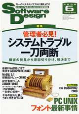
技術評論社Software Design 2008年6月号のp14に,「メインライン化に向けた取り組みに大きな進展」と題してプロジェクト便りが掲載されました。
2008 5.10
TLUG (Tokyo Linux Users Group)でTOMOYO Linuxの講演を行いました。
2008.5.10
TOMOYO Linux version 1.5.4 / 1.6.1をリリースしました。version 1.6.1では特定の環境でコンパイルエラーや起動時にカーネルパニックとなる問題の修正を行ったほか、ポリシーのために割り当てられるメモリ量の上限を制限できるようにしました。
version 1.5.4は1.5.3のバグフィックスを行ったものです。
2008.5.1
LKMLに8回目の提案を行いました。
2008.4.25
CELF Japan Technical Jamboree20にて、ELC2008の再演？を行います。
2008.4.24
Turbolinux社による「Turbolinux 11 Server ソリューションセミナー」に参加し、TOMOYO Linuxの簡単な紹介を行います。
2008.4.18
「webやwikiや、どこに何が書いてあるかわからない」という声を受けて、技術評論社Software Design 2008年5月号に、「TOMOYO Linuxの歩き方（後編）」を書きました。
2008.4.15-17
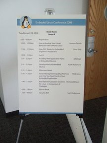
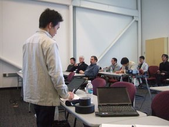
昨年に引き続きCELF Embedded Linux Conference 2008で,
"How to analyze your Linux's behavior with TOMOYO Linux"として発表を行いました。
2008.4.14
LWN.netに"TOMOYO Linux and pathname-based security"と題してTOMOYO Linuxの記事が掲載されました。
2008.4.4
LKMLに7度目の提案を行いました。
2008.4.1
version1.6をリリースしました。（エイプリルフールではありません）
2008.3.18
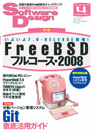
「webやwikiや、どこに何が書いてあるかわからない」という声を受けて、技術評論社Software Design 2008年4月号に、「TOMOYO Linuxの歩き方（前編）」を書きました。前編では、「TOMOYOワールド観光名所」と題し、8ページにわたりTOMOYO Linuxの主な情報源を紹介しています。
2008.2.29, 3.1
OSC2008 Tokyo/Springに出展しました。
2008.2.24
FOSDEM'08の講演資料を公開します。
2008.2.23-24
ブリュッセルで開催されるFOSDEM2008のEmbedded Trackで、TOMOYO Linuxの発表が採択されました。
2008.2.20
Turbolinux 11 Server用のhttpdのサンプルポリシーを作成しました。本ポリシーは、Turbolinux社とTOMOYO Linuxプロジェクトの共同開発です。
2008.1.31
version 1.5.3がリリースされました。内容は、カーネルのバグフィックスとツールの機能拡張です。editpolicyでのファイルアクセス制御ポリシーの「表示」をカスタマイズできるようになりました。
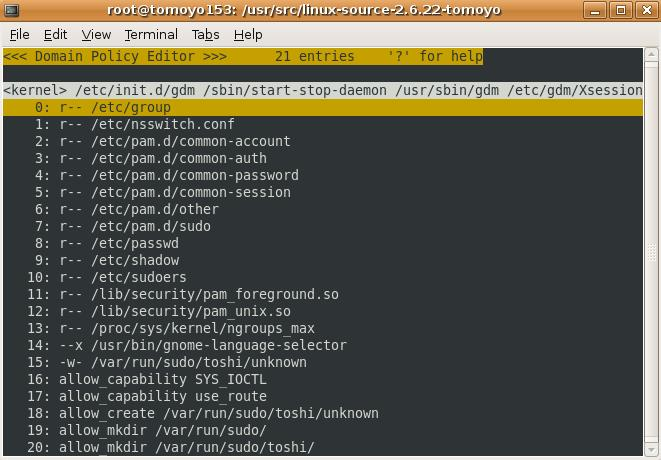
2008.1.30-2.1
2008.1.29 ディストリビュータとセキュアLinux開発プロジェクト合同による有償サポートを開始します。
2008.1.25
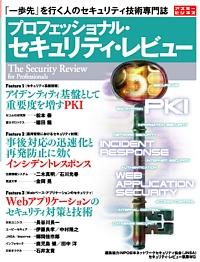
アスキーさんのムックにセキュアOSの解説記事（8ページ）を書きました。セキュアOSの基本的な「概念」について、極力技術用語を使わずわかりやすく説明しています。前半4ページはオンラインで参照できます。
2008.1.8
LKMLに6度目の提案を投稿しました。
2007.12.27
LKMLに"TOMOYO Linux Security Goal"を投稿しました。
2007.12.12
ThinkITさんにPacSec2007のレポートを書きました。もともとは日本語版のみの予定だったのですが、PacSecという会議の内容を考えて、英語版も作成しています。
2007.12.8
技術評論社「ネットワークセキュリティExpert 7」で「TOMOYO Linux最新動向 メインライン化の秘密」と題する記事を書きました。TOMOYO Linuxプロジェクトとしては、2度目の掲載となります。タイトルの通り、現在行っているメインライン化の状況を「現場から」お届けします。
2007.11.29
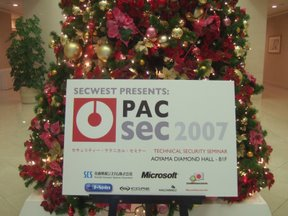
青山ダイアモンドホールで開催されたPacSec 2007にて、"TOMOYO Linux: A Practical Method to Understand and Protect Your Own Linux Box"として発表を行いました。PacSecはとてもアットホームな雰囲気の楽しいイベントでした。機会があれば参加レポートを書きたいと思っています。講演を予定されていたitojun氏のご逝去を悼み、ご冥福をお祈り致します。
2007.11.21
技術評論社様「Software Design」に2007年から12回にわたり掲載いただきました連載記事、「TOMOYO Linuxの世界」につきまして、Wikiページへの掲載作業を開始しました。掲載にあたっては、元の記事の構成は活かしながらバージョンや説明内容は可能な限り現状にアップデートしています。記事の掲載をご快諾いただきました技術評論社様に感謝致します。
2007.11.27
第19回 コンピュータシステム・シンポジウムにて「TOMOYO Linuxの2つの実装方式の性能評価」と題するポスター発表を実施しました。
2007.11.21
LMS対応版の2.1.0のバグフィックスバージョン、2.1.1をリリースしました。
2007.11.17
技術評論社「ネットワークセキュリティExpert7」に「TOMOYO Linux最新動向 メインライン化の秘密」と題して記事を執筆しました。
2007.11.17
第34回東京エリアDebian勉強会で山根秀樹氏が「Tomoyo Kernel Module を Debian Package にしてみました」と題して講演されます。
LKMLに5度目の提案を投稿しました。
2007.11.16
技術評論社「Software Design」2007年12月号にTOMOYO Linuxの使い方の解説の連載、「今日から使えるセキュアOS TOMOYO Linuxの世界」の第12回が掲載されました。2007年1月号から始まった連載は、今回で一旦終了となります。読者の方々と技術評論社編集部様に感謝します。-Wiki記事へ-
2007.11.15
Ubuntu 7.10とTOMOYO Linuxを組みあわせたLiveCDを用いたセルコンピューティングについて、NTTデータがプレスリリースを行いました。本実験は、Ubuntu Japanese Teamとの連携、ご協力により実現が可能となりました。hitoさん、小林様はじめによるご協力に感謝致します。
2007.11.10
関西オープンソース2007で、「TOMOYO Linux@関西」と題してBOFセッションを行いました。
2007.10.31
ターボリナックス様よりTurbolinux 11 ServerでのTOMOYO Linuxサポートが発表されました。
■ 株式会社NTTデータ
NTTデータは、最先端のLinuxテクノロジを意欲的に取り込み、技術的なエッジを追求しながら、ロードバランサの装備など企業ユースにも配慮した「Turbolinux 11 Server」の登場を歓迎し、エンタープライズ分野におけるLinux推進の牽引力となることを期待します。
Turbolinux 11 Serverのコンセプト、「Simple Smart Surprise」は、「使いこなせて安全」を目指して開発されたTOMOYO Linuxにも通じるものであり、国産セキュアOSであるTOMOYO Linuxにとって、日本に主要開発拠点を置きアジア圏に多くのユーザを持つTurbolinuxでの採用は深い意義を持ちます。NTTデータおよびTOMOYO Linuxプロジェクトは、Turbolinux 11 Serverとの技術的連携を行いながら、今後エンタープライズ用途の利用促進を強化していきます。
株式会社NTTデータ 技術開発本部 原田季栄 （TOMOYO Linuxプロジェクト）
2007.10.25
CE Linux Forum Japan Technical Jamboree 17に参加します。LiveCDの紹介とメインライン化提案の状況について説明しました。Ubuntu 7.10 Desktop（英語版）+TOMOYO Linux 1.5.1のLiveCDを配布しています。
2007.10.24
日本高信頼システム田口氏作成のTOMOYO Linuxチュートリアル、「TOMOYO Linuxを体験しよう」について、田口氏より掲載の許可をいただきプロジェクトに登録しました。必見です！
2007.10.18
技術評論社「Software Design」2007年11月号にTOMOYO Linuxの使い方の解説の連載、「今日から使えるセキュアOS TOMOYO Linuxの世界」の第11回が掲載されました。この号では「ログインセッションを制限してみよう(2)」として、システムへのログイン後のユーザのセッションを制限するための設定について解説しています。-Wiki記事へ-
2007.10.11
LKMLに4度目の提案を投稿しました。
2007.10.5 12:30-13:30
OSC2007 Tokyo/FallでTOMOYO LinuxのBOFを開催しました。BOFおよび展示では、Ubuntu Japanese Teamのご協力をいただきUbuntu 7.04日本語版デスクトップLiveCDのTOMOYO Linuxバージョンを配布しました。配布したLiveCDのISOイメージは下記よりダウンロードできます。展示では、Mr. Shintaro Fujiwara氏、hito氏はじめUbuntu Japanese Teamに多大なご協力をいただきました。深く感謝致します。（私は行ったことがないのですが）会場はコミケのような雰囲気だったようです。
10月5日開催されたTurbolinux様のセミナーでは、パブリックベータのダウンロードが始まっている次期サーバ、version 11の機能について、TOMOYO Linux version 1.5が搭載される予定との説明がありました。TOMOYO Linuxプロジェクトは、Turboinux様の導入を歓迎し、技術的支援を行います。
ITproさんの記事に載っています。
2007.10.2
LKMLに3度目の提案を投稿しました。
2007.9.21
TOMOYO Linux version 1.5がリリースされました。
2007.9.21
ThinkITでTOMOYO LinuxのOLS2007挑戦記の連載、「TOMOYO Linux メインラインへの挑戦」が始まりました。
2007.9.18
ITproにOLS2007の記事が掲載されました。
2007.9.18
技術評論社「Software Design」2007年10月号にTOMOYO Linuxの使い方の解説の連載、「今日から使えるセキュアOS TOMOYO Linuxの世界」の第10回が掲載されました。この号では「ログインセッションを制限してみよう(1)」として、システムへのログイン後のユーザのセッションを制限するための設定について解説しています。-Wiki記事へ-
2007.8.24
メインライン化に向けて、LKMLに2度目の投稿を行いました。
2007.8.18
技術評論社「Software Design」2007年9月号にTOMOYO Linuxの使い方の解説の連載、「今日から使えるセキュアOS TOMOYO Linuxの世界」の第9回が掲載されました。この号では「blogのポリシーを作成してみよう(2)」として、ポリシーの設定について解説しています。-Wiki記事へ-
2007.7.18
技術評論社「Software Design」2007年8月号にTOMOYO Linuxの使い方の解説の連載、「今日から使えるセキュアOS TOMOYO Linuxの世界」の第8回が掲載されました。この号からMovableTypeを用いたシステムについて、TOMOYO Linuxの導入から運用までの説明を行います。-Wiki記事へ-
2007.7.12 OLS2007について、CELF Japan Technical Jamboree15, YLUGカーネル読書会で報告を行いました。
2007.7.10 TOMOYOプロジェクトが、SourceForge.jpの「今月のプロジェクト」第1号として掲載されました。
2007.6.29 Ottawa Linux Symposium 2007でTOMOYO LinuxのBoFを行いました。
BoFの報告については、Wikiで整理中です。
2007.6.22
ThinkITでTOMOYO Linuxの連載、「初体験 TOMOYO Linux！」が始まりました。
2007.6.18
TOMOYO Linux GUI version 1.0.0をリリースしました。
2007.6.18
技術評論社「Software Design」2007年7月号にTOMOYO Linuxの使い方の解説の連載、「今日から使えるセキュアOS TOMOYO Linuxの世界」の第7回が掲載されました。この号では、4月1日にリリースされたTOMOYO Linux version 1.4の紹介と4月に参加したELC2007の簡単なレポート（写真入り）が掲載されています。-Wiki記事へ-
2007.6.13
lkmlに[RFC] TOMOYO Linuxを投稿しました。
2007.6.7
LSMに対応したversion 2.0がリリースされました。
2007.6.5
version 1.4.1がリリースされました。
2007.5.18
技術評論社「Software Design」2007年6月号にTOMOYO Linuxの使い方の解説の連載、「今日から使えるセキュアOS TOMOYO Linuxの世界」の第6回が掲載されました。この号にて、TOMOYO Linuxの基本的な機能と使い方に関する解説が完結しました。なお、「Software Design」は本号が第200号となるそうです。掲載の機会を与えていただきました事を感謝し、今後もより充実した記事を提供させていただきたいと思います。-Wiki記事へ-
2007.5.10
Turbolinux 10 Server、Turbolinux Appliance Server 2.0用セキュリティアップデート、「TLEA-2007-5（カーネルのアップデート）」にて、TOMOYO Linuxがサポートされました。
該当するTurbolinuxサーバでTOMOYO Linuxの機能を利用するためには、TOMOYO Linuxを有効にするための設定が必要です。TOMOYO Linuxの機能およびそれを利用するための設定については、Turbolinux社のサポート範囲外となりますので、ご注意下さい。
2007.5.7
Software Design連載、「TOMOYO Linuxの世界」第1シーズンの完結について。
2007年1月号より技術評論社様の「Software Design」に掲載いただいている連載、「今日から使えるセキュアOS TOMOYO Linuxの世界」について、基本的な機能および使い方の解説が第6回で完結します。読者の方のご参考に各連載の主要トピックについて以下に紹介します。
| 掲載号 | 連載タイトル/主なトピック |
|---|---|
| 第1回(2007年1月号) | 「ポリシー自動学習を経験する」 |
| 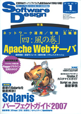 | セキュアOSとTOMOYO Linuxの概要 TOMOYO Linuxのインストール，アンインストール手順 TOMOYO Linuxのポリシーエディタ メイン遷移の確認 ポリシーファイルの保存と読み込み |
| 第2回（2007年2月号） | 「アクセス制御を経験する」 |
| 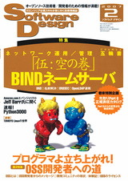 | TOMOYO Linuxの「制御モード」 「プロファイル」 Webサービスの保護手順 パス名のパターン化 |
| 第3回（2007年3月号） | 「ポリシーをチューニングしてみよう」 |
| 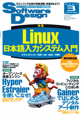 | TOMOYO Linuxにおけるドメイン遷移の概念 メイン遷移の例外 initializerとkeep_domainによる操作のグループ化 条件付きアクセス許可 アクセスログの保存 対話的なアクセス許可(ccs-queryd) |
| 第4回（2007年4月号） | 「いろんな機能を試してみよう(1)」 |
| システム全体でのアクセス制御について ネットワークに対するアクセス制御 ケイパビリティに対するアクセス制御 シグナルに対するアクセス制御 | |
| 第5回（2007年5月号） | 「いろんな機能を試してみよう(2)」 |
| ファイルシステムの保護機能 デバイスファイルの保護機能 | |
| 第6回（2007年6月号） | 「不正ログインを撲滅しよう」 |
| TOMOYO Linuxによるログイン認証の強化 TOMOYO Linuxによる管理者権限の分割 より高度な使い方 |
2007.4.27
中野サンプラザで開催されたCE Linux Forum Japan Technical Jamboree14で、ELC2007 (Worldwide Embedded Linux Conference 2007)のアンコール講演が行われました。
2007.4.24
CE Linux Forum ELC2007 (Worldwide Embedded Linux Conference 2007)のプレゼンテーション資料を公開するwebページが作成されました。
2007.4.20
アットマーク・アイティさんの記事、「日本のセキュアOSを支える5つのプロジェクト」にてTOMOYO Linuxが紹介されています。
2007.4.18
技術評論社「Software Design」2007年5月号にTOMOYO Linuxの使い方の解説の連載、「今日から使えるセキュアOS TOMOYO Linuxの世界」の第5回が掲載されました。-Wiki記事へ-
2007.4.18
ELC2007 (CE Linux Forum Embedded Linux Conference 2007)にて、TOMOYO Linuxのプレゼンテーションとチュートリアルを行いました。
帰国の朝、California Palace of the Legion of Honorにて。（左から、桝本、原田、武田、半田）
2007.4.3
マイコミジャーナル様にリリースをご紹介いただきました。
2007.4.1
version 1.4がリリースされました。（エイプリールフールではありません）
2007.3.27
Ottawa Linux Symposium 2007で、TOMOYO LinuxについてのBOFセッションが採用されました。
採用通知:
Your proposal TOMOYO Linux has been accepted by the 2007 Linux Symposium Committee as a Bird of a Feather session. If originally submitted as a paper proposal you may decide not to adapt your topic to a BOFS and if you do please notify us ASAP.
We ask that you confirm that you will be hosting this BOFS by logging back into the website and submitting an abstract that will be used on the website and in the event programme. Please limit your abstract to two paragraphs covering the essence of your topic.
Please go to the link below and submit your abstract as soon as possible.
https://www.linuxsymposium.org/2007/XXXXXXXX
P.S. there are many reasons why a paper proposal might have been accepted as a BOFS instead including the general belief that an interactive discussion of the topic would be more useful.
投稿したアブストラクト：
Mandatory Access Control (MAC) is an effective way to keep a system secure, but managing an appropriate MAC policy is a nightmare for most administrators. TOMOYO Linux provides "manageable and understandable" MAC on Linux 2.4 and 2.6 kernels. Among a number of features, TOMOYO Linux has a unique "automatic policy generation" mode. With TOMOYO Linux, administrators don't have to design the MAC policy from scratch. Instead, they just enter commands and enable services just as needed. TOMOYO Linux takes care of the rest.
TOMOYO Linux is not an "attribute based" MAC, but an "approach based" MAC. TOMOYO Linux judges each access request by "how the subject was created" and "where the object is located", not by "who created the object" and "what object the subject accesses". TOMOYO Linux kernel keeps track of process invocation history for every process, and TOMOYO Linux kernel uses each invocation history as a unit of access control zone.
Although we respect and understand the advantages of using LSM (Linux Security Modules), we could not use LSM in TOMOYO Linux. LSM is a good framework designed for performing "attribute based" MAC, but is not always useful for performing "approach based" MAC.
TOMOYO Linux was developed by NTT DATA CORPORATION, Japan. It has been available at SourceForge.jp under GPL license since Nov. 2005.
2007.3.18
技術評論社「Software Design」2007年4月号にTOMOYO Linuxの使い方の解説の連載、「今日から使えるセキュアOS TOMOYO Linuxの世界」の第4回が掲載されました。-Wiki記事へ-
2007.3.17
アスキー「UNIX magazine」2007年4月号のセキュアOS特集にTOMOYO Linuxの記事、「ポリシー学習機能を備えた国産セキュアOS TOMOYO Linux」を書きました。-Wiki記事へ-
2007.3.6
4/17, 18にSan Joseで開催されるCELF Embedded Linux Conference 2007の事務局よりTOMOYO Linuxの発表の採択通知を受領しました。"TOMOYO Linux - a lightweight and manageable security system for PC and embedded Linux"として発表を行います。
2007.2.28
開発協力者の募集を開始しました。
2007.1.18
2007.2.8
吉岡様からご依頼をいただき、YLUGカーネル読書会にてTOMOYO Linuxについてご紹介させていただきました。YLUGのイベントということで、セキュアOSやTOMOYO Linuxの概要ではなく、開発者自身が機能、開発内容を紹介しましたが、暖かい励まし？の嵐にたじたじ・・・。
2007.1.18
2006.12.19
2006.12.18
2006.12.8 中野サンプラザで開催されるCE Linux Forum（組み込みLinux）のイベント、JapanTechnicalJamboree12にて、TOMOYO Linuxが紹介されました。
2006.11.11 「version 1.3リリース」
2006.10.13 「セキュアOS「TOMOYO Linux」を用いた柔軟かつ強固な利用者認証方式のプロトタイプを開発」
TOMOYO Linuxリンク集が作成されました。
2006.6.2 6/2開催されるLinux Conference 2006で「セキュアOSに関する本音BOF」が開催されました。
2006.5.15 ヒルズアカデミーで開催されたOpen Source Revolution!にて、TOMOYO Linuxの商用システム導入事例が紹介されました。（国内では初めてのセキュアOSの商用システム導入事例『報告』かも？！）
2006.5.10 ITproに記事掲載
2006.4.24 NTTデータ（茅場町）にてSELinux開発者Russell Coker氏との意見交換会を実施した。
2006.3.16 14:10-15:10 テンアートニにて第1回TOMOYO Linux LIDS勉強会で、TOMOYO Linuxの説明会が開催された。
2005.11.28 ITproにTOMOYO Linuxの導入手順を解説する記事が掲載された。
2005.11.11 青山ダイヤモンドホールにて開催されたLinux Kernel Conference 2005にて、「TOMOYO Linuxへの道」として、TOMOYO Linux開発の経緯が紹介された。
2005.9.29 愛知県立大学情報学部にて開催された情報学ワークショップ2005にて説明とデモについてTOMOYO Linux関連の発表が行われ、優秀論文賞を受賞した。
TOMOYO Linuxの概要についてLinux Conference 2005で発表され、論文と説明資料が公開されている。
TOMOYO Linuxについて、セキュリティ・スタジアム2004に防御側として出展された時の様子が、掲載されている。
TOMOYO Linuxの実装についてLinux Conference 2004で発表され、論文と説明資料が公開されている。
TOMOYO Linuxにおける独自のドメインの考え方について、Network Security Forum 2003で発表され、論文と説明資料が公開されている。
TOMOYO Linuxの物理的な改ざん防止について、Linux Conference 2003で発表され、論文と説明資料が公開されている。このときは開発コードが"SAKURA"だったようだった（SAKURAの機能は現在TOMOYO Linuxの中に取り込まれている）。